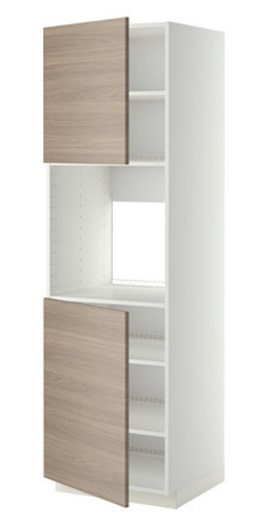
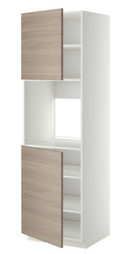

Il nostro progetto per la cucina
Per quanto riguarda l'ambiente cucina abbiamo utilizzato arredi IKEA poiché facilmente montabili e smontabili e, soprattutto, economici. Infatti, pur avendo libero arbitrio sul progetto, ci siamo voluti anche confrontare con una concreta disponibilità commerciale, non dimenticando che queste abitazioni sono nate come case popolari e quindi richiedono un arredamento senza un eccessivo impegno economico.
È per questo motivo che anche per i complementi di arredo ci siamo affidati principalmente ai prodotti di IKEA e Leroy Merlin come:
- Piano di lavoro SALJAN
- Faretti HEKTAR
- Battiscopa PRARIE
- Ante BROKHULT
- Pavimento ROXY GREY
- Presa Vimar
- Maniglia porta
- Maniglia portafinestra
- Tenda Tokyo
- Bastone per tenda
- Lampada HEKTAR
- Sedie HARRY
- Tavolo BJURSTA
Qui sotto potete trovare le tavole relative al progetto, disegnate in scala 1:20.
Come prima cosa potrete vedere la pianta corredata delle linee di taglio necessarie alle sezioni.
Ecco le 3 sezioni che permettono di capire meglio l'organizzazione della cucina.
Qui sotto potete trovare la lista completa degli arredi utilizzati e il link di reindirizzamento al sito del produttore.
L'intera camera è stata arredata con la linea METOD, pensata per comporre la propria cucina in modo da soddisfare le specifiche necessità.
 

{kind=link}
{kind=link}
{kind=link}
- Mobile base stretto METOD
- Mobile base alto con ripiani METOD
- Mobile base con cassetti METOD/FORVARA
- Forno RAFFINERAD
- Lavastoviglie integrata MEDELSTOR
- Frigorifero FROSTKALL
- Piastra a induzione FOLKLIG
- Lavello LANGUDDEN
- Miscelatore MALMSJON
{kind=link}
{kind=link}
{kind=link}
{kind=link}
{kind=link}
{kind=link}


Politecnico di Milano, Scuola del Design, Facoltà di Design degli Interni, A.A. 2016/2017
Laboratorio di Strumenti e Metodi per il progetto, doc. Marco Ferrara
Autori: Amanda Carzaniga & Nicolò Corbascio